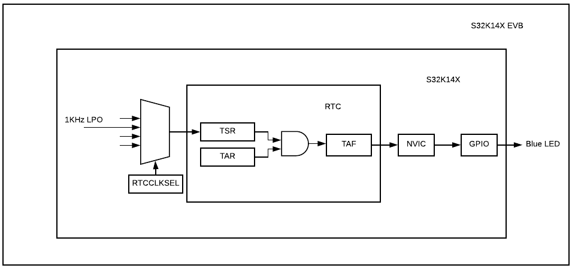

Description
Example to show RTC module basic and common implementation,
RTC_IRQHandler is enabled to toggle the blue led every RTC alarm (5 secs.)

Design:
- Disable watchdog
- System clocks: Initialize SOSC for 8 MHz, sysclk for 80 MHz, RUN mode for 80 MHz
- Initialize Ports and GPIOs
- Select 32KHz LPO clock for RTC
- Enable Clock
- Disable the module
- Prescaler reset to 0
- Start count from a value different than 0
- Set the alarm
- Enable interrupt
- Run RTC
Interrupt routine:
- Reset the Alarm time
- Toggle LED
Pins definitions:
| Function | S32K116 | S32K118 | S32K142 | S32K144 | S32K146 | S32K148 | S32K144W |
| GPIO [BLUE LED] | PTE8 | PTE8 | PTD0 | PTD0 | PTD0 | PTE23 | PTE3 |
Driver Functions:
main.c
#include "device_registers.h"
{
PCC->PCCn[PCC_PORTD_INDEX ]|=PCC_PCCn_CGC_MASK;
PORTD->PCR[0] = PORT_PCR_MUX(1);
PTD->PDDR |= 1<<0;
}
{
WDOG->CNT=0xD928C520;
WDOG->TOVAL=0x0000FFFF;
WDOG->CS = 0x00002100;
}
{
S32_NVIC->ISER[(uint32_t)(vector_number) >> 5U] = (uint32_t)(1U << ((uint32_t)(vector_number) & (uint32_t)0x1FU));
S32_NVIC->ICPR[(uint32_t)(vector_number) >> 5U] = (uint32_t)(1U << ((uint32_t)(vector_number) & (uint32_t)0x1FU));
}
{
for(;;)
{
}
}
{
if (RTC->SR & RTC_SR_TAF_MASK)
{
PTD->PTOR |= 1;
}
}
 1.8.17
1.8.17